Slop, constraints, and a person in the loop.
Notes from a game production pipeline, after Budd and Scarfe’s “Why Creativity Cannot Be Interpolated.”
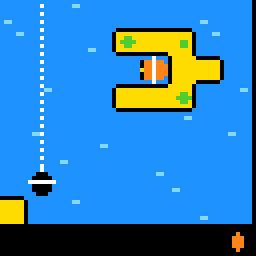
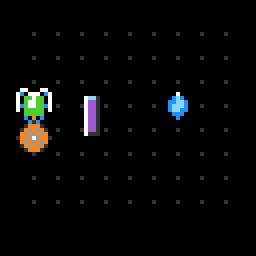
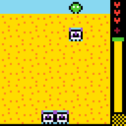
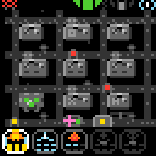
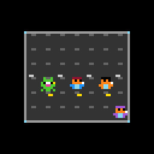
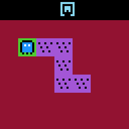
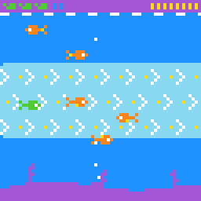
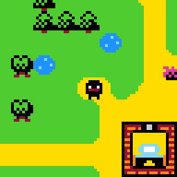
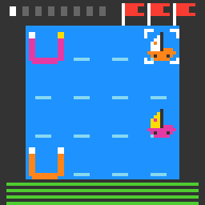
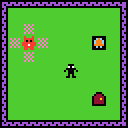
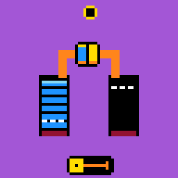
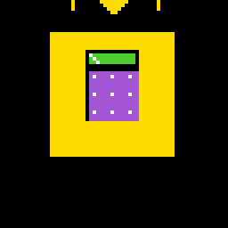
Who is writing, and what this is
I’m a video game producer. I’ve produced games at a AAA studio that will stay nameless, and for this project I directed a team of coding agents and a few collaborators, Son and Ronen among them. This page explains what we made, why most of it was thrown away, and why the rest looks the way it does. The explanation is not mine. It comes from a paper by two friends of mine, Dr. Jeremy Budd and Dr. Tim Scarfe of Machine Learning Street Talk: Why Creativity Cannot Be Interpolated (2026). What follows is a report on how its argument held up in a workshop.
What the paper claims
The paper’s central claim is that novelty is not creativity. A system can produce output that is new, one piece at a time, and still not be creative, because genuine creativity requires respect for the constraints of the domain it works in. Budd and Scarfe call “slop” the conjugate failure: what you get when novelty is not constrained by understanding.
Two further claims matter here. First, current AI is only meaningfully creative under human supervision. A model is coherent within any single frame but has no trajectory of its own, and its output resolves into a coherent whole only when a competent person supplies the grounding. Second, human and AI co-creation is the most promising path, with a warning attached: done well it offers a fresh perspective, done badly it reduces the work to slop. In the authors’ phrasing, “AI amplifies what you bring to it.” They also caution against wild extrapolation from today’s systems to near-term labour-market disruption.
The constraints of this domain
ARC-AGI-3 states its constraints. Each environment was attempted by ten people, and only environments fully solved by at least two of them, independently and on a first look, were admitted. The private games are harder than the public ones but remain solvable by people. The public set is, in ARC’s words, intentionally easier, with a stronger emphasis on clarity and fun (the ARC-AGI-3 paper, section 3.6). A game that belongs in this domain is therefore one that a person can pick up cold and figure out, that is hard for an AI, and, in the public set, pleasant to play.
By the paper’s definition, a game that breaks these constraints is slop however new it looks. Many of the synthetic game sets I examined appear to break them in the most basic way. A solver or a scripted solution shows that a game can be won, which says nothing about whether a person can work it out, and none of the sets I looked at published a record of people playing. Several look easier for a program than for a person, which is the reverse of what the domain asks for.
What we found when we counted
We were no exception. I counted on 8 November 2026. The player on the team’s site holds 1,046 distinct games made by our team and our agents. That leaves out ARC’s 25 public games and the 252 ARC Prize environments we imported. Forty-six are approved: 4.4 percent, so 95.6 percent were not kept. Eight hundred of the 1,046 were batch output credited to GPT, and not one of those eight hundred was approved.
The Games page keeps every saved version of the games we kept working on: 918 versions of 643 games, in 502 lines of descent. Claude models wrote 422 of those versions (Opus 5.5 alone wrote 211), GPT models 360, people 111 and other sources 25. The 46 kept games have one thing in common: a person played them and sent them back. The paper would predict this outcome. Generation without understanding gives you volume, and judging the volume is a separate job that needs a person.
Method: the person is the outside check
Our pipeline follows the paper’s division of labour. The agents write the code and the art. A person plays each version, says what is unclear, dull or derivative, and decides what is kept. The lock-target line went through eight versions on the way to LT03 that way, and most of the feedback on all of these games is mine. The agents supplied speed. I supplied what the paper calls grounding, and what Kenneth Stanley, whom the authors cite, calls a nose for the interesting. A producer’s job, which is to say what a game is for and when it is finished, turns out to be the job the paper assigns to the human.
The same reading applies to the question everyone in games is asking. In this project no artist and no programmer lost a job. What changed is how fast one person could iterate. That is a modest claim about one workshop, and it is consistent with the paper’s caution against sweeping forecasts: its authors note that spreadsheets did not lead to fewer accountants.
Limits
Not every game here is mine. Some came from Son and Ronen, and some started as GPT or Claude output that people then played and reworked. I cannot promise any idea is new. The working bet is that games a person played and fixed make better practice for an agent than games only a program checked. Nobody has measured that yet, and nothing on this page claims it.